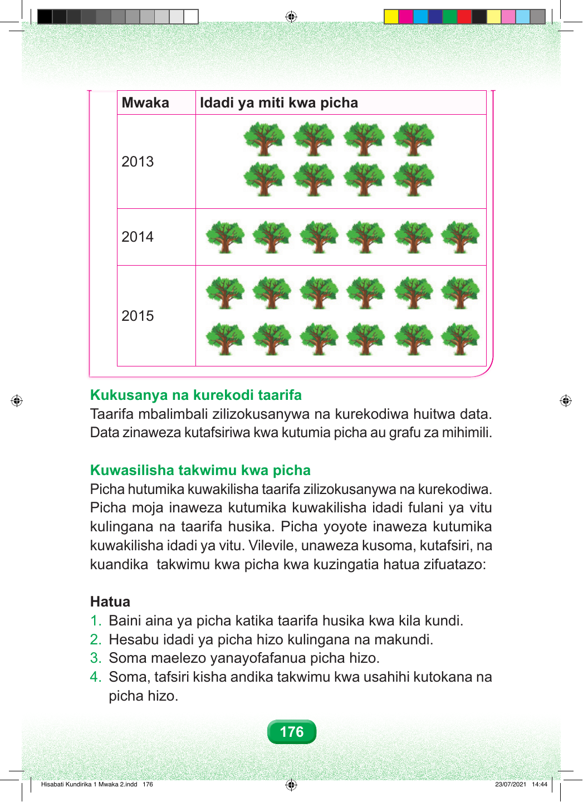

Mwaka Idadi ya miti kwa picha 2013 2014 2015 Huu ni mwendelezo wa jedwali la picha za miti. Safu ya mwaka elfu mbili na kumi na tatu ina picha nane za miti. Hivyo, idadi ya miti ni minane. Safu ya mwaka elfu mbili na kumi na nne ina picha sita za miti. Hivyo, idadi ya miti ni sita. Safu ya mwaka elfu mbili na kumi na tano ina picha kumi na mbili za miti. Hivyo, idadi ya miti ni kumi na miwili. Kukusanya na kurekodi taarifa Taarifa mbalimbali zilizokusanywa na kurekodiwa huitwa data. Data zinaweza kutafsiriwa kwa kutumia picha au grafu za mihimili. Kuwasilisha takwimu kwa picha Picha hutumika kuwakilisha taarifa zilizokusanywa na kurekodiwa. Picha moja inaweza kutumika kuwakilisha idadi fulani ya vitu kulingana na taarifa husika. Picha yoyote inaweza kutumika kuwakilisha idadi ya vitu. Vilevile, unaweza kusoma, kutafsiri, na kuandika takwimu kwa picha kwa kuzingatia hatua zifuatazo: Hatua. Hatua ya kwanza. Baini aina ya picha katika taarifa kwa kila kundi. Hatua ya pili. Hesabu idadi ya picha kulingana na makundi. Hatua ya tatu. Soma maelezo yanayofafanua picha hizo. Hatua ya nne. Soma, tafsiri na uandike takwimu kwa usahihi kutokana na picha. picha hizo. 176 Hisabati Kundirika 1 Mwaka 2.indd 176 23/07/2021 14:44